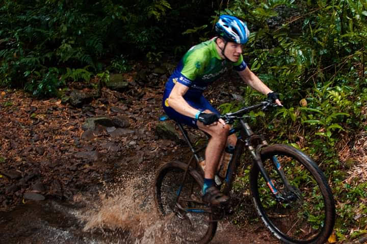
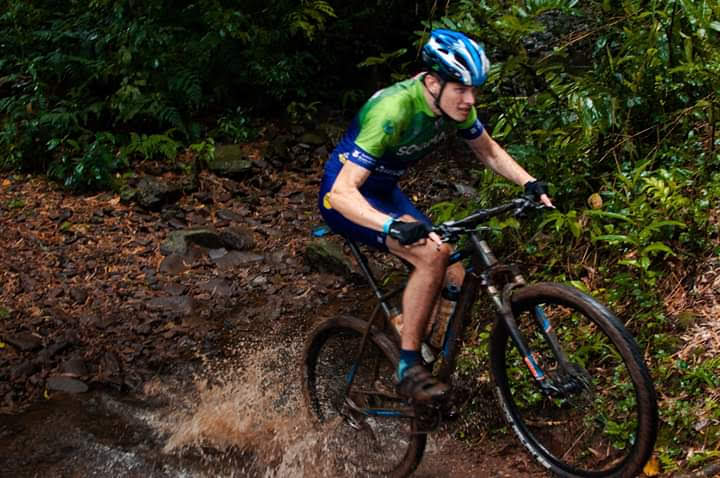

Sobre Mim
Meu nome é Matheus e tenho 24 anos. Sou natural de Dois Irmãos, uma cidade acolhedora no sul do Brasil. Atualmente, trabalho na Krafti Tecnologia, onde desempenho o papel de suporte de ERP. Nessa posição, tenho a oportunidade de interagir com uma variedade de modelos de emissão de notas fiscais, oferecendo suporte aos clientes em suas necessidades relacionadas ao sistema. Além disso, sou responsável pela instalação e treinamento dos clientes no uso eficaz do sistema.
Além disso, tenho contato quase que diário com SQL, realizando pesquisas via banco de dados e efetuando ajustes nos dados dos clientes utilizando os principais comandos SELECT, INSERT e UPDATE. Com frequência, também é necessário acessar e manipular dados de duas tabelas simultaneamente usando o comando JOIN. Essa experiência me permitiu desenvolver habilidades técnicas valiosas e a capacidade de resolver problemas de forma eficiente.
Sempre que posso, gosto de dedicar meu tempo livre a atividades ao ar livre que me conectam com a natureza e proporcionam uma sensação de liberdade e aventura. Uma das minhas paixões é fazer passeios e viagens de moto para lugares remotos no interior, onde posso desfrutar de paisagens deslumbrantes, como montanhas, cachoeiras e rios. Recentemente, tenho planejado uma emocionante viagem de moto para o Deserto do Atacama em dezembro, uma jornada que compartilharei com minha namorada e que promete ser uma experiência inesquecível. Além disso, sou um entusiasta do mountain bike e mantenho viva minha paixão desde jovem, chegando a competir em algumas provas aqui no Rio Grande do sul, como o campeonato gaúcho de MTB e Sul Bike Race. A adrenalina das competições me impulsionava, e uma vez conquistei o 4º lugar na categoria Sub-30 aos 18 anos, em uma prova da Sul Bike Race, mesmo tendo um furo de peneu que reparei no meio da trilha, infelizmente os problemas mecânicos eram bem comuns nas provas.
Aqui estão duas imagens que capturam a essência dos meus hobbies:
 
